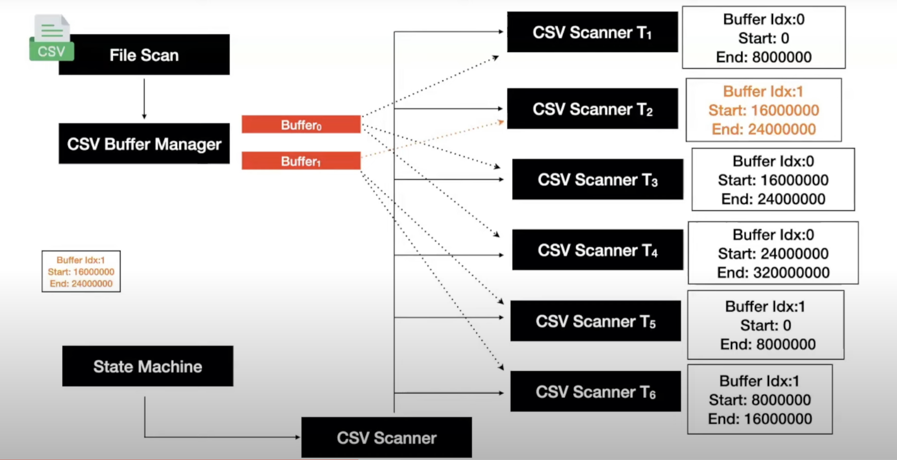

- Pedro did his PhD and Post-doc from CWI. He works at DuckDB now. He’s worked on ART indexes, zonemaps, index joins, CSV reader etc. for DuckDB.
Early On (2018)
- The CSV parser was able to read simple well constructed CSV files.
- Accept main dialect options: Delimiter, Quote, Escape
- Accept schema definitions: Column Names / Types
- Issues
- Bad Performance in Line Split and Sanitization
- Relied on
std::ifstream- No control on buffer management or file access.
- Didn’t work for quoted new lines
Buffered CSV Reader + GOTO (2019)
- Relevant file in PR: https://github.com/duckdb/duckdb/pull/211/files#diff-ab757987c109f9f46a7cd0876d1971730997734da4abe4ba27402738f457771c
// Pseudo-Code
normal:
/* state: normal parsing state */
// this state parses the remainder of a non-quoted value
// until we reach a delimiter or newline
do {
for (; position < buffer_size; position++) {
if (buffer[position] == options.delimiter[0]) {
// delimiter: end the value and add it to the chunk
goto add_value;
} else if (StringUtil::CharacterIsNewline(buffer[position])) {
// newline: add row
goto add_row;
}
}
} while (ReadBuffer(start, line_start));
// file ends during normal scan: go to end state
goto final_state;
add_value:
...
add_row:
...
in_quotes:
...
unquote:
...
handle_escape:
...
carriage_return:
...
final_state:
...- Instead of
ifstream, you’ve your own file handle which utilises 32MB buffers and provides control of what’s in memory or not for efficiency. - ~ 4x improvement TPCH-SF10 benchmark with 60M line-items. Went from ~220s to ~55s.
- Issues
- Problematic to debug (no stack information)
- Especially due to the use of the goto statement
- Brittle (can’t handle CSV files that aren’t well constructed)
- Setting headers, types and dialect (delimiter, quotes, escapes) is difficult
- Problematic to debug (no stack information)
Woodstock Era (2020)
- Relevant article: https://duckdb.org/2023/10/27/csv-sniffer.html
- Focus on automatically reading CSV files.
- Have types, names and dialects inferred from data
- Introduction of options like:
- ignore_errors: skip lines that don’t confirm w/ found rules
- null_padding: mark columns as null in rows w/ missing columns
- skip_rows: skip dirty rows (comments etc.) (auto-detected)
- Things seen in CSV files
- Dirty Lines: comments on top or interspersed in the line
- Missing Columns
- Too Many Columns (extra ; but no data)
- Missing Quotes (eg: In line -
The Who; 'Who"s Next; 1971) - Non-UTF8 characters
- Empty Lines
- Extra ; at the end of every line (with no data)
- Only a 10% speed-up on TPCH-SF10 compared to previous version.
The Parallel State Machine Era (2023-now)

In a (non well-structured) CSV file, you don’t know where a line starts or ends. Eg:
CSV File:
1;Tenacious D; 'The Pick Of Destiny'; 2006
2;'Simon \r\n Garfunkel'; 'Sounds of Silence'; 1966
3;Sir. Jon Lajoie; 'You want some of this?'; 2009
4;The Who; 'Who's Next'; 1971
We’ve information about the schema of the CSV file from the CSV sniffer.
Bigint | Varchar | Varchar | Date
Buffers:
- Buffer #1:
1;Tenacious D; 'The Pick Of Destiny'; 2006\r\n2;'Simon\r\n Garfunkel - Buffer #2:
'; 'Sounds of Silence', 1966 \r\n 3;Sir. Jon Lajoie; 'You want some of - Buffer #3:
this?'; 2009\r\n 4;The Who; 'Who's Next'; 1971
Let’s say 4 threads (Thread 0 - Thread 3) are allotted parts to read by the global scanner (split shown using | ).
1;Tenacious D; 'Th | e Pick Of Destiny | '; 2006\r\n2;'S | imon\r\n Garfunkel
Threads can cross over boundaries (in and across buffers) if needed. They also use the schema to determine if the particular line they read is valid or not.
State Machine
The parser uses a state machines similar to this: (States x Transition Trigger)
| States | A..Z, 0..9 | , | ” | \ | \n |
|---|---|---|---|---|---|
| Standard | Standard | Delimiter | Standard | Standard | Record Separator |
| Delimiter | Standard | Delimiter | Quote | Standard | Record Separator |
| Quote | Quote | Quote | Unquote | Escape | Quote |
| Record Separator | Standard | Delimiter | Standard | Standard | Record Separator |
| Escape | INVALID | INVALID | Quote | INVALID | INVALID |
| Unquote | INVALID | Delimiter | INVALID | INVALID | Record Separator |
| Eg: If you’re currently in Standard state and come across ”,”, you’ll transition to Delimiter state. |
- Improved ease of debugging.
- Performance: takes 0.1s on the TPCH-SF10 benchmark
- Some other optimizations
- Implicit Casting (casting during read instead of in a separate step when possible)
- Projection Pushdown
Future
- Detecting Structural Errors (Can be ignore or shown depending upon configuration)
- Missing Columns
- Extra Columns
- Invalid Unicode (
"pedro��"->"pedro") - Sidenote: Can also be configured to store rejected values (with file metadata, config and the error with exact row-col position)
- Async IO
- CSV Fuzzing / Testing
- Faster Dialect Detection
- Caching / Partioning
- Multiple readers over the same file start from the same point.
- IO, Parsing must happens again. This can be avoided.
- Academic work: NoDB: Efficient Query Execution on Raw Data Files